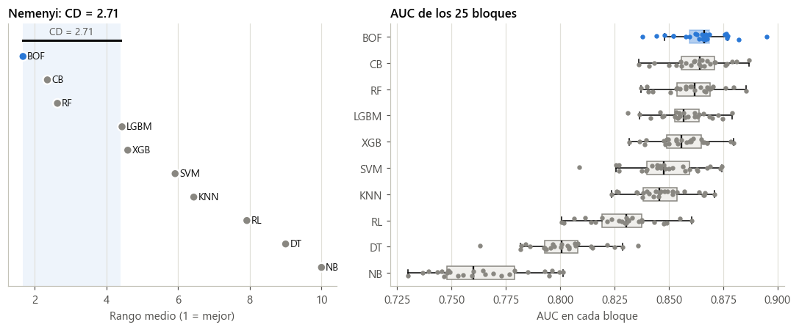

Protocolo y validación estadística#
Protocolo pre-registrado#
El protocolo (experiments/protocolo.md) se congeló el 26 de octubre de 2026 con un único commit (8bc0c2d) y el tag anotado protocolo-e3-v1, antes de correr los experimentos definitivos. Fija:
Hipótesis confirmatorias: H1 (el BOF supera en AUC medio a la mejor combinación benchmark), H2 (supera a cada uno de los 9 benchmarks), H3 (consistencia en los conjuntos adicionales) y H4 (cada componente aporta, en la ablación). El resto de análisis es exploratorio.
Métricas: AUC-ROC como principal; PR-AUC, Brier, log-loss y F1 como secundarias.
Datos: el conjunto principal y cuatro adicionales elegidos con un criterio fijado antes de evaluar.
Particiones y semillas: validación anidada 5 × 3 repetida con las semillas 42 a 46 (25 bloques pareados); la semilla 42 reproduce las particiones del Entregable 2.
Pruebas: P1 Friedman con Iman–Davenport y Nemenyi; P2 Wilcoxon; P3 t corregida de Nadeau–Bengio; P4 DeLong; complementarias: t bayesiana correlacionada e intervalo bootstrap BCa; tamaño del efecto con delta de Cliff y d pareada; Holm para comparaciones múltiples; α = 0.05.
Presupuesto: 40 evaluaciones de hiperparámetros por pliegue para todos los modelos.
Regla de superioridad (sección 6.4 del enunciado), aplicada literalmente por
src/analisis.py::veredicto.
El anexo A del protocolo resume las 80 configuraciones de diseño evaluadas antes del congelamiento, todas con validación interna dentro del entrenamiento del primer pliegue externo, y el anexo B guarda la huella SHA-256 de cada archivo de código.
Desviaciones. Ninguna afecta a los experimentos confirmatorios:
A
src/data.pyse le agregaron al final, después del congelamiento, las funciones de lectura del dashboard (tabla_app,json_app,modelo_finalymetadata_final). La parte anterior del archivo es idéntica a la congelada: su huella SHA-256 coincide con la del anexo B. Las huellas de los demás archivos del anexo B no cambiaron.Se escribió código nuevo que no interviene en la validación ni en las pruebas: la compactación de los artefactos del BOF para el despliegue (
src/artefactos.py::compactar_bof), la medición de memoria de la sección 11 del protocolo (experiments/memoria.py) y la validación por bloques del archivo, un análisis exploratorio que no estaba previsto y que motivaron los residuos del Entregable 2.Para ahorrar tiempo, las búsquedas finales de hiperparámetros (las que definen los artefactos, sobre los 5320 vinos) corrieron en paralelo con la validación principal: la de CatBoost en un proceso aparte y las de los demás modelos, una tras otra, en otro. Durante ese tramo hubo 12 o 13 procesos en lugar de 11 (y por momentos hasta 17, mientras se ensayaban los scripts de análisis con resultados simulados), así que los tiempos medidos en ese periodo están algo inflados. Esto afecta al reporte de cómputo, no a las métricas: las búsquedas finales no usan la validación ni sus resultados.
Supuestos de las pruebas#
Wilcoxon (P2) supone diferencias pareadas independientes y distribuidas simétricamente alrededor de la mediana. La asimetría de las 25 diferencias de AUC frente a CatBoost es -0.08.
t corregida (P3) supone normalidad aproximada de las diferencias; la prueba de Shapiro–Wilk da p = 0.820. La independencia no se cumple, porque los 25 bloques comparten vinos (cada vino está en 4 de los 5 entrenamientos de cada repetición). Por eso se usa la corrección de Nadeau and Bengio [2003], que infla la varianza de la media por (1/J + nprueba/nentrenamiento) = 1/25 + 0.25 en lugar de 1/25; la t sin corregir sería anticonservadora [Bouckaert and Frank, 2004, Dietterich, 1998].
DeLong (P4) supone casos independientes y compara dos AUC calculados sobre los mismos vinos; se aplica a las predicciones fuera de muestra de la repetición 1 (cada vino predicho una vez, por un modelo que no lo vio). Los vinos son intercambiables (no hay estructura temporal), con la salvedad de los posibles lotes del Auditoría de fuga de información.
Friedman y Nemenyi (P1) suponen bloques independientes; los 25 bloques comparten vinos, así que P1 se interpreta como un procedimiento global aproximado [Demšar, 2006].
Las pruebas de Diebold–Mariano, Giacomini–White, MCS y SPA suponen orden temporal; como el problema es de corte transversal, se usan las de la columna correspondiente del enunciado.
Prueba global: Friedman y diferencia crítica#

Figura 16 Izquierda: rangos medios de los 10 modelos en los 25 bloques y diferencia crítica de Nemenyi (α = 0.05); los modelos dentro de la franja azul no se distinguen del mejor. Derecha: AUC de cada bloque.#
La prueba de Friedman con la corrección de Iman–Davenport rechaza que los 10 modelos sean iguales (F = 208.4, p = 2.6e-101), con un tamaño de efecto W de Kendall de 0.90. El rango medio del BOF es 1.68 y el del mejor benchmark (CatBoost), 2.36. En el diagrama, la franja de la diferencia crítica (CD = 2.71) que parte del BOF cubre solo a CatBoost y a Random Forest: Nemenyi, que controla todas las comparaciones a la vez, no distingue a esos tres modelos. Sí separa al BOF de los otros siete, desde LightGBM hasta Naive Bayes. El panel derecho muestra por qué: la dispersión del AUC entre bloques de un mismo modelo es mayor que la distancia entre las medias de los primeros.
Pruebas pareadas frente a cada benchmark#
| Benchmark | AUC benchmark | ΔAUC medio | Bloques a favor (de 25) | Nemenyi p | Wilcoxon p | Wilcoxon p (Holm) | t corregida p | t corregida p (Holm) | ΔAUC DeLong (rep. 1) | DeLong p | DeLong p (Holm) | δ de Cliff | Magnitud | d pareada |
|---|---|---|---|---|---|---|---|---|---|---|---|---|---|---|
| CatBoost | 0.8631 | +0.0018 | 18 | 0.9987 | 0.0451 | 0.0451 | 0.4400 | 0.4400 | +0.0149 | < 0.0001 | < 0.0001 | +0.09 | despreciable | +0.42 |
| Random Forest | 0.8609 | +0.0040 | 20 | 0.9827 | 0.0007 | 0.0014 | 0.1428 | 0.2857 | +0.0031 | 0.1500 | 0.1500 | +0.14 | despreciable | +0.82 |
| LightGBM | 0.8571 | +0.0078 | 23 | 0.0417 | < 0.0001 | < 0.0001 | 0.0097 | 0.0389 | +0.0237 | < 0.0001 | < 0.0001 | +0.38 | mediano | +1.51 |
| XGBoost | 0.8558 | +0.0091 | 22 | 0.0229 | < 0.0001 | < 0.0001 | 0.0097 | 0.0389 | +0.0068 | 0.0107 | 0.0215 | +0.41 | mediano | +1.51 |
| SVM | 0.8484 | +0.0165 | 25 | < 0.0001 | < 0.0001 | < 0.0001 | 0.0018 | 0.0090 | +0.0155 | < 0.0001 | < 0.0001 | +0.58 | grande | +1.89 |
| KNN | 0.8469 | +0.0181 | 25 | < 0.0001 | < 0.0001 | < 0.0001 | < 0.0001 | 0.0005 | +0.0191 | < 0.0001 | < 0.0001 | +0.69 | grande | +2.56 |
| Regresión Logística (L1/L2) | 0.8289 | +0.0360 | 25 | < 0.0001 | < 0.0001 | < 0.0001 | < 0.0001 | < 0.0001 | +0.0354 | < 0.0001 | < 0.0001 | +0.94 | grande | +3.86 |
| Decision Tree | 0.8015 | +0.0634 | 25 | < 0.0001 | < 0.0001 | < 0.0001 | < 0.0001 | < 0.0001 | +0.0509 | < 0.0001 | < 0.0001 | +1.00 | grande | +5.10 |
| Naive Bayes | 0.7645 | +0.1004 | 25 | < 0.0001 | < 0.0001 | < 0.0001 | < 0.0001 | < 0.0001 | +0.0995 | < 0.0001 | < 0.0001 | +1.00 | grande | +6.24 |
Se hicieron 27 comparaciones confirmatorias (3 pruebas pareadas × 9 benchmarks) más la comparación global de Friedman. Los p-valores ajustados por Holm se calculan dentro de cada prueba sobre las 9 comparaciones; como sensibilidad, la tabla completa en experiments/resultados/tablas/pruebas_bof.csv también trae Holm sobre las 27.
Tabla de pruebas frente al mejor benchmark#
| Prueba | Hipótesis nula | Supuestos verificados | Estadístico | p crudo | p ajustado | Tamaño del efecto | Conclusión |
|---|---|---|---|---|---|---|---|
| P1. Friedman (Iman–Davenport) | Los 10 modelos tienen el mismo rango medio | Bloques independientes (aproximado: pliegues repetidos comparten casos) | F = 208.44 (9, 216 gl) | < 0.0001 | < 0.0001 | W de Kendall = 0.90 | hay diferencias entre modelos |
| P1. Nemenyi (BOF vs CB) | Mismo rango medio | Post-hoc de Friedman, todos los pares | CD = 2.71 | 0.9987 | 0.9987 | δ de Cliff = 0.09 | no se rechaza H0 |
| P2. Wilcoxon (BOF vs CB) | Mediana de la diferencia de AUC = 0 | Diferencias pareadas simétricas; 25 bloques | W = 88 | 0.0451 | 0.0451 | rango-biserial = 0.46 | se rechaza H0 a favor del BOF |
| P3. t corregida de Nadeau–Bengio (BOF vs CB) | Media de la diferencia de AUC = 0 | Normalidad aproximada de las diferencias; varianza corregida por solapamiento | t = 0.79 (24 gl) | 0.4400 | 0.4400 | d pareada = 0.42 | no se rechaza H0 |
| P4. DeLong (BOF vs CB) | AUC iguales sobre los mismos 5320 vinos | Casos independientes; predicciones fuera de muestra de la repetición 1 | z = 5.05 | < 0.0001 | < 0.0001 | ΔAUC = 0.0149 [0.0092, 0.0207] (BCa) | se rechaza H0 a favor del BOF |
Pruebas complementarias. La prueba t bayesiana correlacionada [Corani and Benavoli, 2015] con una región de equivalencia práctica de ±0.005 de AUC da P(BOF mejor) = 0.09, P(equivalentes) = 0.90 y P(BOF peor) = 0.00. El intervalo bootstrap BCa [Efron, 1987] de la diferencia de AUC en la repetición 1 es +0.0149 [+0.0092, +0.0207]. Repitiendo DeLong en cada una de las 5 repeticiones, la diferencia frente a CatBoost es significativa (Holm) en 5 de 5.
Significancia práctica#
La tabla traduce la diferencia a vinos con las predicciones fuera de muestra de la repetición 1 (los 5320 vinos, 1009 buenos). Con la misma tasa de falsos positivos (10 % de los vinos no buenos marcados como buenos), la diferencia entre el BOF y CatBoost es de +51 vinos buenos detectados; si una bodega solo pudiera catar los 1064 vinos con mayor puntaje (el 20 %), la diferencia sería de +31 vinos buenos. Son diferencias modestas pero no nulas: unos 50 vinos buenos más con la misma tasa de falsas alarmas y unos 30 más entre los que se catarían primero. Sin embargo, corresponden a una sola repetición, justo aquella en la que CatBoost queda más lejos de su media (0.8488 frente a 0.8631); frente a Random Forest, con las mismas predicciones, la ventaja es de 7 y 10 vinos. En el promedio de las 25 particiones la diferencia de AUC con CatBoost es de 0.0018, de modo que la ventaja práctica del BOF sobre el mejor benchmark es pequeña y depende de la partición.
Veredicto sobre la superioridad (R3)#
| Condición | Cumple | Detalle |
|---|---|---|
| 1. AUC medio mayor que los 9 benchmarks | sí | BOF 0.8649 frente a 0.8631 (CatBoost) |
| 2. Al menos 3 de 4 pruebas rechazan a favor del BOF (p ajustado < 0.05) | no | P1 Nemenyi: no rechaza, P2 Wilcoxon: rechaza, P3 t corregida: no rechaza, P4 DeLong: rechaza |
| 3. Efecto no despreciable (|δ| ≥ 0.147 o |d| ≥ 0.2) | sí | δ de Cliff = 0.09; d pareada = 0.42 |
| 4. Consistencia en los conjuntos adicionales | no | mejor en 0 de 4; significativamente peor en 1 |
| Superior (R3) | no | todas las condiciones a la vez |
El BOF cumple dos de las cuatro condiciones. Tiene el AUC medio más alto de los 10 modelos (0.8649 frente a 0.8631 de CatBoost) y la d pareada (0.42) supera el umbral de un efecto no despreciable, aunque la δ de Cliff (0.09) no lo hace. No cumple la condición de las pruebas: frente a CatBoost solo rechazan la igualdad Wilcoxon (p ajustado = 0.045) y DeLong (p ajustado < 0.0001), mientras que Nemenyi (p = 0.999) y la t corregida de Nadeau y Bengio (p = 0.44) no lo hacen, y la regla exigía tres de cuatro. Tampoco cumple la de consistencia: no es el mejor en ninguno de los cuatro conjuntos adicionales y en Abalone es significativamente peor que el mejor benchmark. En consecuencia, el BOF no es superior según la regla pre-registrada. La lectura conjunta de las pruebas es coherente: el BOF gana 18 de los 25 bloques, casi siempre por poco, y la prueba bayesiana asigna una probabilidad de 0.90 a que ambos modelos sean equivalentes en la práctica (diferencia menor que 0.005 de AUC). Frente a 7 de los 9 benchmarks, en cambio, las tres pruebas pareadas confirman la ventaja.